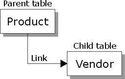

The Set Diagram
A set's structure is illustrated using a set diagram that shows which databases belong to the set, and the hierarchy in which the are linked.

Note the following terms:
The top (first) table in the set diagram is the primary table.
Each table is a parent of the tables below linked to it.
Each table (except the primary table) is a child of the table above to which it is linked.
See Also